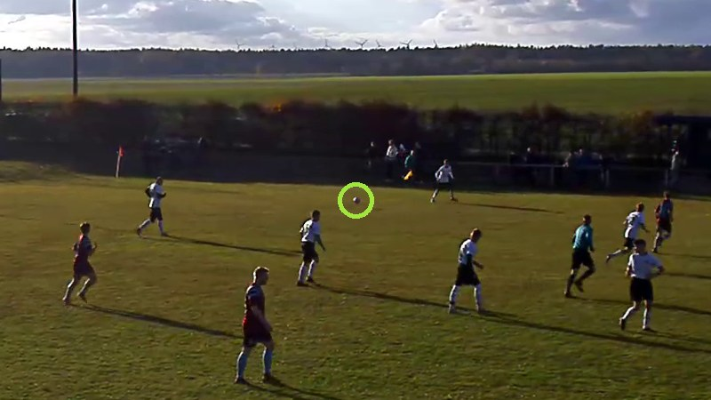

The idea
One camera, no analyst, and a Sunday league match that nobody will ever look at again.
Clubs in the lower leagues increasingly film their games with a single automatic camera such as Veo. The video exists, but nobody has the time to count passes, possession or turnovers by hand.
My goal: load a match video, and get the numbers automatically. Every player detected, the two teams separated, the ball followed, and from that possession, passes and turnovers. Locally on my laptop, with no video sent to the cloud, and with honest information about how reliable each number is.
My team of AI agents
Instead of asking one chatbot to "build it", I set up a team with fixed roles. Each role has one question to answer, and four of them can stop the work if it is not good enough.
Research Scout
Looks up how the best open-source projects on GitHub solve the problem, with evidence, before anything is built.
advisesArchitect & Red Team
Turns the research into a design, then attacks its own design. Is this the best realistic option or just the first one?
can blockDeveloper
Builds only the approved design, in small, tested steps. Tests first where it makes sense.
buildsData Auditor
Checks raw detections and reference labels against the original video before anything is measured.
can blockEvaluator
Measures with fixed rules and reports what the numbers show, and what they do not show.
can blockReviewer & Gatekeeper
Makes the final call for each phase. After three failed fix rounds, the human (me) decides.
final callCodex · the builder
OpenAI's coding agent wrote most of the code, ran the benchmarks and documented every result with a file as proof.
Claude · the critic
Anthropic's Claude did the research, wrote the plan and the work packages, labelled reference clips and counter-checked Codex's results.
Me · the coach
I set the goal and the rules, chose between options and decided when to change direction. The two agents talked through one shared handoff file with more than 20 dated entries.
Six days, five turns
The project did not go in a straight line. These were the moments that changed its direction.
Rules first
Before any new code, the agents wrote down the rules that must never be broken: no player identity is ever set automatically, every number in the documentation needs a benchmark file as evidence, and no face recognition.
Tracking and a review screen
Players were tracked over time, and a local review page let a human confirm or correct what the model proposed.
Chasing the ball
The ball turned out to be the hard part. The team built custom filters, a possession state machine and pass detection, and tested two specialised alternatives.
The pivot: fully automatic
Human review of every event was too slow for a course project. I decided to switch to fully automatic analysis, with every number clearly labelled as automatic and shown together with its measured accuracy. A YouTube import followed the same day.
Five minutes, audited
Codex produced the five-minute annotated video. The Data Auditor checked every input file, inspected 50 ball detections by eye and blocked any claim of "measured accuracy" until a human confirms the reference.
Problems the agents caught
The worst errors were not in the code. They were in the data. That is why the Data Auditor joined the team halfway through.

Problem
Most "balls" found by the first model were the Veo logo in the corner of the picture.
Fix
A mask for the logo area, so nothing there can count as the ball.
Problem
A bottle at the touchline and an object on a wall looked like a ball that never moved.
Fix
Filters that drop "balls" that stay in place while the camera pans, or rest on the pitch with no player near.
Problem
White shirts in backlight were counted as the red team, giving one team 100% possession.
Fix
Team colours are learned per video with k-means clustering instead of fixed colour rules.
Problem
The referee was sometimes counted as a player of the red team.
Fix
Referee kits are recognised and kept out of the team clustering, checked on sample frames.
What worked, what didn't
An honest scorecard. The project is a working prototype, not a finished product.
Achieved
- A fully automatic five-minute analysis of a real amateur match, as an annotated video.
- On average 16.6 people detected per analysed frame, and the two teams separated by shirt colour.
- The most confident ball detections are reliable: 30 of 30 checked samples were correct.
- A local app that also takes a YouTube link and returns video plus numbers.
- A repeatable way of working with agents, where every number has a file as evidence.
Not there yet
- The ball is found in only 51% of frames. It is tiny and often hidden behind players.
- Possession could be assigned to a team in only 36 of 300 seconds.
- Passes: 3 of 7 found in the practice clips, 0 of 2 in a clip held back for testing.
- A specialised ball model (WASB) found a ball in just 9 of 250 frames, mostly reflections on parked cars.
- Doubling the image resolution to 1280 px took 2.4 times longer and found no more balls (116 vs 118 frames).
The pass reference was drafted with AI help. Until a human confirms it, the pass numbers are a diagnostic, not a final accuracy.
What I learned
The biggest lessons were about working with AI, not about football.
- Data beats modelsA bigger model did not help. Looking at the actual frames and fixing the input did.
- Agents need roles that can say noA single agent tends to agree with itself. A red team, a data auditor and a gatekeeper caught mistakes that would have looked fine in a demo.
- Keep a test the system has never seenOn the clips used for tuning, passes looked promising. On the held-back clip, the result was 0 of 2. Without it I would have fooled myself.
- Write things downA shared handoff file and small work packages let two different AI agents work on the same project without losing track.
- Honest numbers are part of the productEvery figure on this site comes from a result file, and the weak ones are shown too.
What's next
Three steps would make the biggest difference.
- Human-checked referenceConfirm the pass reference by hand, so accuracy can be measured for real.
- A ball model for this cameraTrain on our own Veo footage instead of stadium broadcasts.
- Per-player statsConnect automatic pass proposals to the review screen, so confirmed passes count for each player.